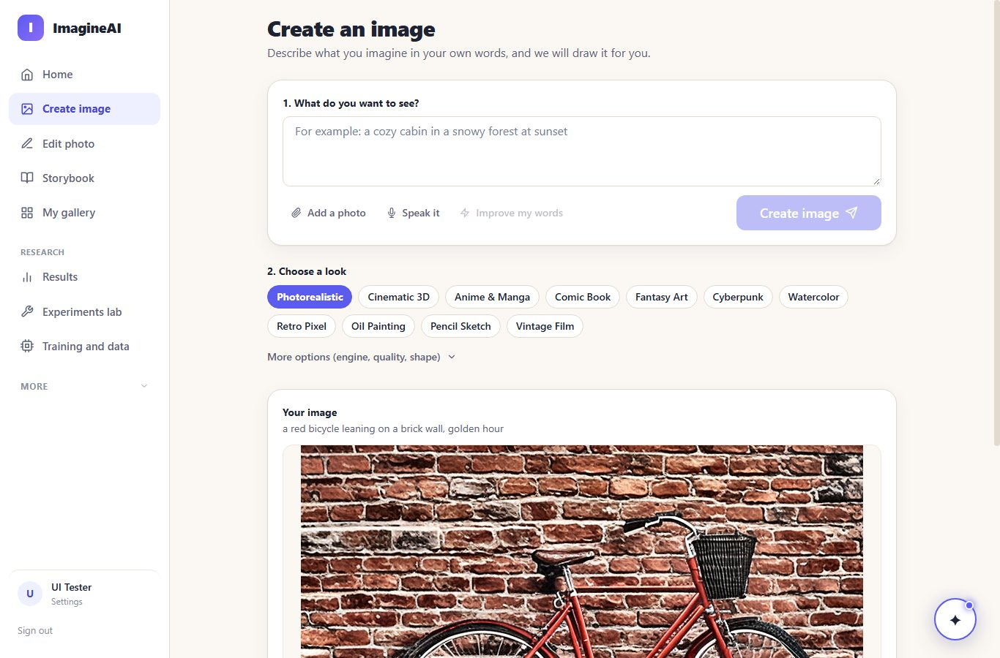

Imagine The Impossible.
A 43× faster text-to-image studio engineered for edge hardware. Distilled into 1–2 steps, protected by a zero-GPU NLP parser, an adaptive fallback ladder, and classical computer vision quality gating.

Master System Architecture Circuit
Interactive 3-tier hardware & software topology with live streaming data flows
Client UI & Mobile Viewport
High-performance mobile PWA frontend with touch-optimized controls, dynamic aspect ratio selection (1:1, 16:9, 9:16), prompt history caching, and instantaneous feedback visualization.
The 9-Stage Video Pipeline Player
Watch the tensor flow in real-time video format with animated directional arrows and dynamic scrubber
Client Dispatch & Guard
The user inputs a prompt. FastAPI validates payload boundaries. Single-flight mutex lock ensures concurrent requests on 8GB VRAM laptop receive HTTP 429 rather than triggering fatal CUDA OOM errors.
Visual Model Arena & Hardware Telemetry
Zero dense text walls. High-impact circular gauges, comparative progress bars, and empirical benchmarks
Empirical Head-to-Head Comparison Bars
TESTED ON NVIDIA RTX 5050 8GBComputer Vision X-Ray & Defect Scanner
Classical OpenCV mathematical inspection running zero-GPU quality checks
👆 Hover / drag cursor across the image to examine local gradient responses
Normal RGB Frame
Direct RGB frame from SD-Turbo UNet & VAE decode. The image undergoes 13 no-reference mathematical checks without human intervention.
43× Latency Speed Warp & Empirical Ablation
Direct stopwatch comparison: 10,545 ms (SD 1.5 Baseline) vs 247 ms (SD-Turbo T1)
Samsung R&D Viva Defense Deck
Two-member pilot terminal, slide-by-slide ownership, and 12 flip-card answers to tough technical evaluator questions